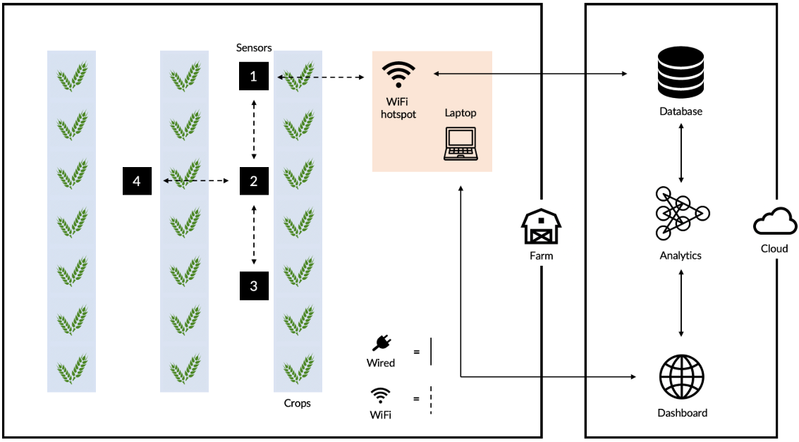

Your business. Your data... Your MetricX
'Insert animation'
eg Java describing system overview
About
Metricx is the cloud-based, open IoT operating system from the University of Manchester that connects your products, plants, systems, and machines, enabling you to harness the wealth of data generated by the Internet of Things (IoT) with advanced analytics. Create an account and and connect your sensors to view your data in real-time via our app or web portal.
Explore your way to digitalization in the world of IoT!
4.0 Industrial Control Examples:
- M2M Applications - Machine auto-diagnosis and assets control.
- Indoor Air Quality - Monitoring of toxic gas and oxygen levels inside chemical plants to ensure workers and goods safety.
- Temperature Monitoring - Control of temperature inside industrial and medical fridges with sensitive merchandise.
- Ozone Presence - Monitoring of ozone levels during the drying meat process in food factories.
- Indoor Location - Asset indoor location by using active (ZigBee) and passive tags (RFID/NFC).
- Vehicle Auto-diagnosis - Information collection from CanBus to send real time alarms to emergencies or provide advice to drivers.